Editing Supra2’s conditioning weights
A targeted, gradient-free typography-subspace experiment—with unchanged controls and a negative result.
The hypothesis
Supra2 often produces unwanted pseudo-lettering. We tested whether conditioning directions associated with typography contributed to that behavior, and whether suppressing those directions directly in the text-conditioning projection could reduce it without retraining the generator.
The target was only ctx_proj.weight. The image generator, T5 encoder, decoder, prompts, seeds and sampler were otherwise held fixed within this experiment. No gradient updates or runtime hooks were used for the edit; the modified projection itself carried the change.
Constructing and applying the edit
- Encode twelve paired phrases with the existing Flan-T5 encoder: for example “printed letters” versus “plain colors”, and “typography and lettering” versus “texture and brushstrokes”.
- Average valid token embeddings for each phrase, excluding padding. Subtract each pair to obtain twelve candidate semantic directions.
- Use singular value decomposition of the stacked differences to obtain an orthonormal basis. Keep the leading one or four directions.
- Project the selected directions out of the conditioning projection, at strengths α = 0.5 and α = 1.0.
W′ = W − α (W Uᵣ) Uᵣᵀ W original ctx_proj.weight Uᵣ orthonormal conditioning directions, rank r α suppression strength
This compiles a small semantic-subspace ablation into one matrix. It is not automatic synthesis of a program in weight space, a demonstration of a localized typography circuit, or a comprehensive replication of WeightCode.
Protocol and controls
Eight development captions × two seeds × five conditions produced 80 comparison images. Every condition used 256px, 25 sampling steps, CFG 3 and the same pretrained TAESD decoder. Conditions were the original baseline, rank 1 at 0.5 and 1.0 strength, and rank 4 at 0.5 and 1.0 strength. Evaluation captions were not used to select the typography directions.
| Condition | Rank | Strength | Weight-change Frobenius norm |
|---|---|---|---|
| baseline | 0 | 0 | 0.00000 |
| erase-r1-a0.5 | 1 | 0.5 | 0.99715 |
| erase-r1-a1 | 1 | 1 | 1.98887 |
| erase-r4-a0.5 | 4 | 0.5 | 2.06806 |
| erase-r4-a1 | 4 | 1 | 4.13230 |
The matrix-change norm measures edit magnitude, not image quality.
After all edits, the original weight tensor was restored exactly. Regenerating the first ship control produced the same PNG bytes as the baseline. SHA-256: e19e5fd9fdd68431ea1e157b5e2092ab964f9d51c98388933ee546f0170dffe9. This checks reversibility and pipeline consistency; it is not evidence that the edit improved anything.
Every comparison
Both seeds and all eight development captions are included. Click a preview to inspect it. These are compressed public-report previews; original PNGs remain in local evidence.
Seed 0 — 8 captions
| Caption | baseline | erase-r1-a0.5 | erase-r1-a1 | erase-r4-a0.5 | erase-r4-a1 |
|---|---|---|---|---|---|
| A cargo ship burning at sea, smoke rising into the sky. oil painting | 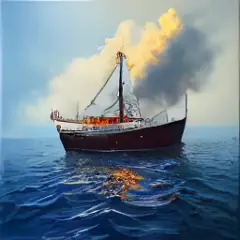 | 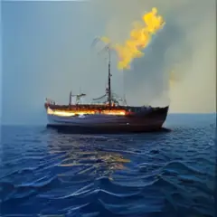 | |||
| Women football players celebrating with a trophy on a football pitch. oil painting | 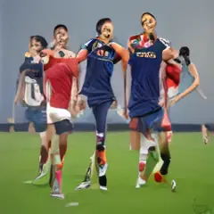 | 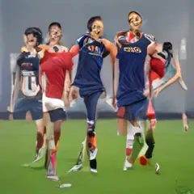 | 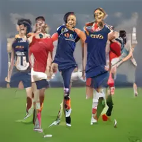 | 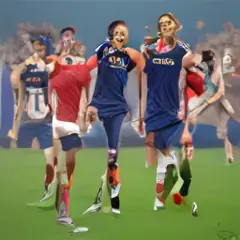 | 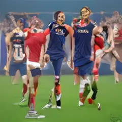 |
| A doctor examining a patient in a hospital room. oil painting | |||||
| A rocket launching from a coastal spaceport, flames and clouds of smoke. oil painting | |||||
| A rescue boat moving between flooded houses. oil painting | 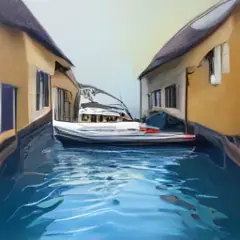 | 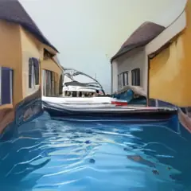 | 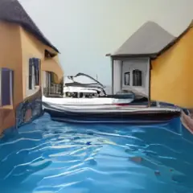 | 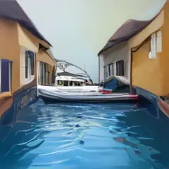 | 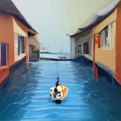 |
| Solar panels on rolling green hills under a blue sky. oil painting | 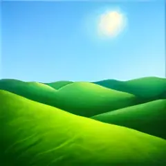 | 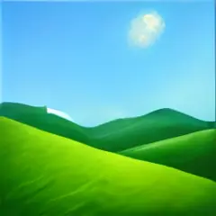 | 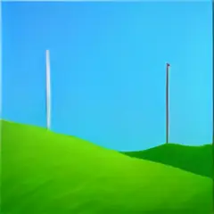 | 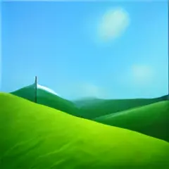 | 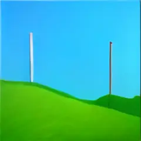 |
| A sea jellyfish floating in the pitch-black ocean depths. oil painting | 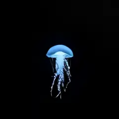 | 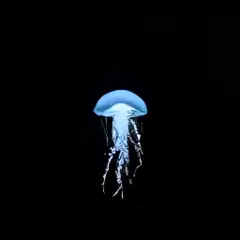 | 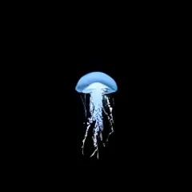 | 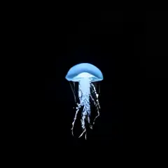 | 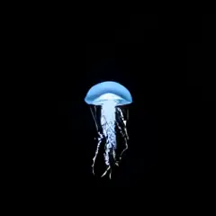 |
| A singer holding a microphone on a concert stage. oil painting | 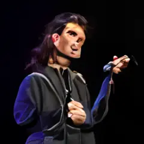 | 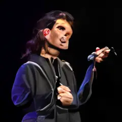 | 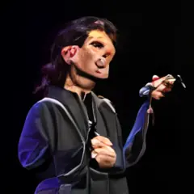 | 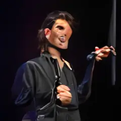 |


Seed 1 — 8 captions
| Caption | baseline | erase-r1-a0.5 | erase-r1-a1 | erase-r4-a0.5 | erase-r4-a1 |
|---|---|---|---|---|---|
| A cargo ship burning at sea, smoke rising into the sky. oil painting | 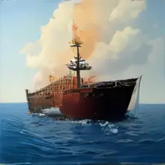 | ||||
| Women football players celebrating with a trophy on a football pitch. oil painting | 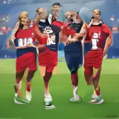 | 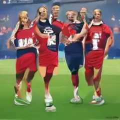 | 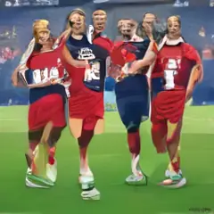 | 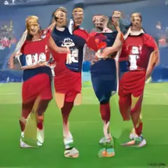 | 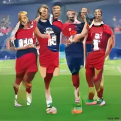 |
| A doctor examining a patient in a hospital room. oil painting | |||||
| A rocket launching from a coastal spaceport, flames and clouds of smoke. oil painting | 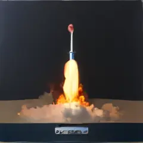 | ||||
| A rescue boat moving between flooded houses. oil painting | 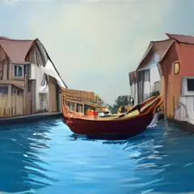 | 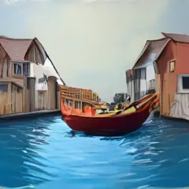 | 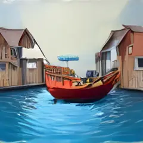 | 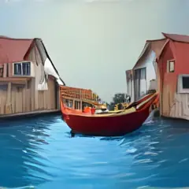 | 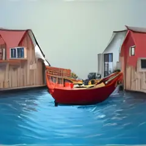 |
| Solar panels on rolling green hills under a blue sky. oil painting | 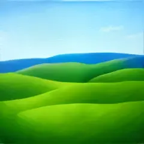 | 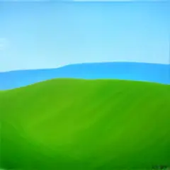 | 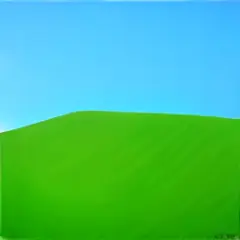 | 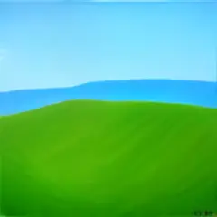 | 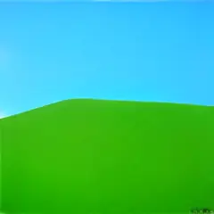 |
| A sea jellyfish floating in the pitch-black ocean depths. oil painting | 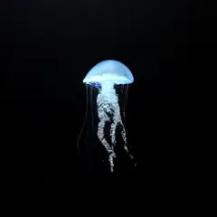 | 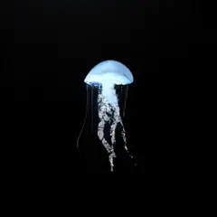 | 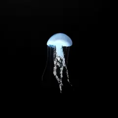 | 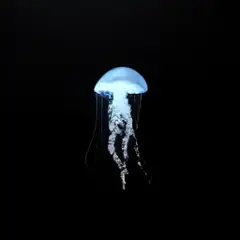 | 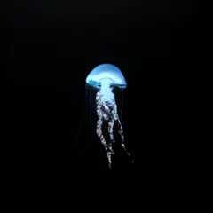 |
| A singer holding a microphone on a concert stage. oil painting | 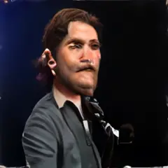 |


Result and interpretation
Visual inspection did not find a convincing, consistent reduction in unwanted lettering or an improvement in scene coherence. Some images changed, which shows that the projection affects generation; image change alone is not a successful repair. No edited variant was selected or deployed.
The phrase contrasts also change subject and visual semantics: “a newspaper headline” versus “a landscape painting” differs in more than typography. Averaged text embeddings are a crude proxy for the internal representation that drives pseudo-text. Suppressing such a subspace can remove useful conditioning along with the target concept.
We did not run OCR-based scoring, a blinded preference study, a causal localization study, a multi-layer search or gradient-based model editing. The sample is too small to quantify general behavior. Pseudo-lettering may arise from the generator’s learned image distribution and decoder interaction rather than one separable conditioning direction.
What would make a stronger follow-up?
Use carefully matched text/no-text contrasts, localize effects with activation interventions, measure both lettering and prompt adherence, and validate on new captions before committing to a permanent edit. That would be a new experiment. This cleanup/report task did not modify or retrain the model.
Reproduction and sources
Implementation: supra_edit.py. The committed protocol and compact image records include model revisions, phrase pairs and original image hashes. The local edit.safetensors retains the basis, singular values and original projection tensor.
Motivation: weight-space programming experiments and WeightCode. These sources motivated investigation; their reported results do not establish that this image-generator repair should succeed.